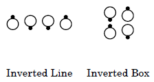
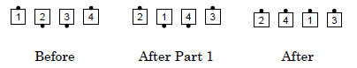
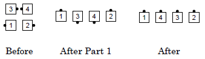
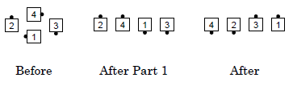
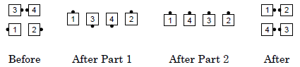

This concept is used with calls that start with the right hand and are defined as a series of turns (e.g., Swing Thru, 1/4 Thru, Remake).

Starting formation: Inverted Line or Inverted Box; every pair of dancers must be in a right or lefthand mini-wave.
Dance action: Dancers start by having everyone in a mini-wave (pair) turn by either the right or left hand the appropriate amount. The call continues, with the following modifications as necessary:
For example, after a Heads Square Thru 4, Centers In, the call Any Hand Swing Thru would have all dancers turn half (some by the right and some by the left) and the new centers Partner Trade to end in Facing Lines.
Example #1: Any Hand Swing Thru

Example #2: Any Hand 1/4 Thru

Example #3: Any Hand 3/4 Thru

Example #4: Any Hand Remake

The Facing Couples Rule does not apply with this concept.